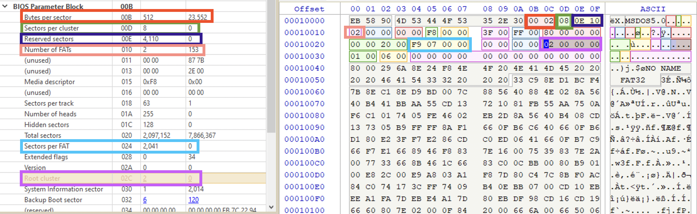
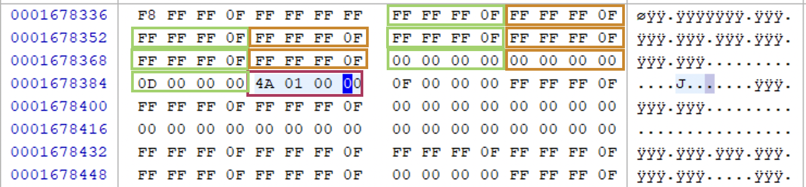
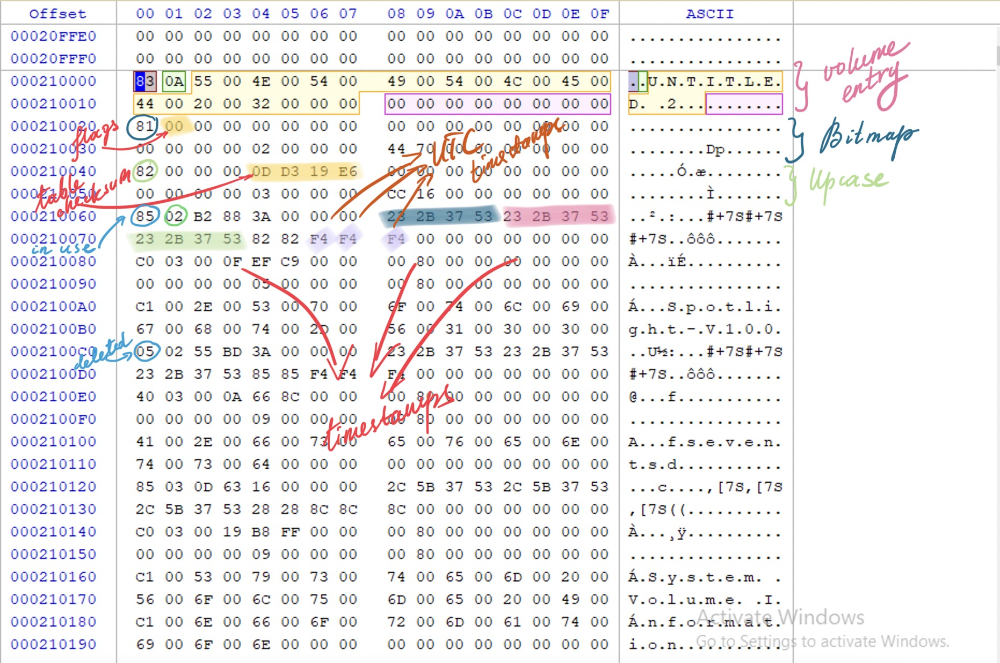
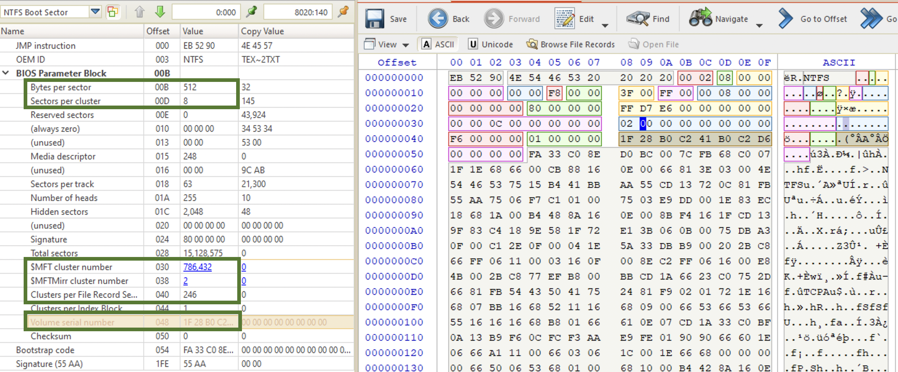
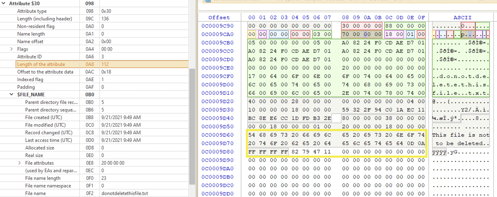
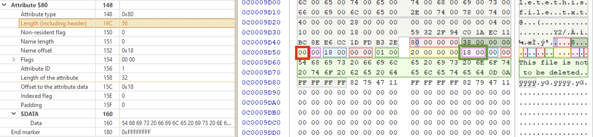
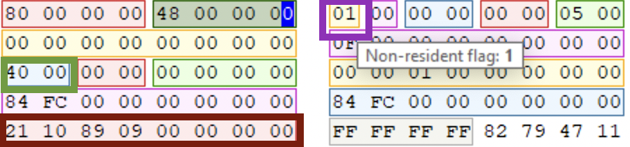
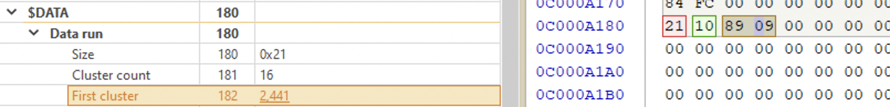
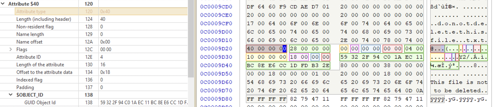
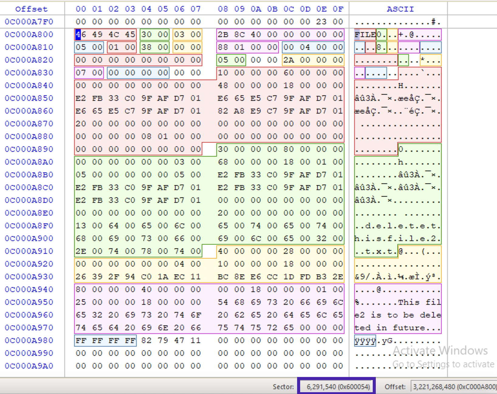

File Systems Overview
| Name | Partition size (min/max) | Cluster size (min/max) | File Max Size | fstab code |
|---|---|---|---|---|
| FAT16 | 16Mb/2Gb | 2Kb/32Kb | ||
| FAT32 | 260Mb/32Gb 🔍 | 2Kb/32Kb | ||
| NTFS 1.1 | 500Mb/8Gb 🔍 | 512B/8Kb | ||
| NTFS 3.0 | 500Mb/16EB | 512B/64Kb | ||
| HFS | ||||
| HFS+ | ||||
| APFS | ||||
| ext2 | 16Tb | 2Tb | ext2 |
|
| ext3 | 16Tb | 2Tb | ext3 |
|
| ext4 | 1Eb | 16Tb | ext4 |
|
| ReiserFS | 16Tb | 8Tb | resiserfs |
|
| JFS | 32Pb | 4Tb | jfs |
|
| XFS | 16Eb | 8Eb | xfs |
|
| Btrfs | 16Eb | 16Eb |
Two entries marked with a🔍 are from M. Graves' book “Digital Archeaology” book. I have not found any other information about max partition size on NTFS 1.1 and FAT32 max partition size is claimed to be 2,048 Gb, which doesn’t correlate with other resources.
There are: file name, file metadata and the contents of the file itself. They are not in the same place. File metadata contains filename and also a ptr to the sector, where the file’s contents starts and size of data. Theoretically, we could change the file metadata to make it point to another cluster… 🤔
| Name | Cluster | size | last accessed |
|---|---|---|---|
| malware.txt | 654 | 80 | October 13, 2020 |
Essential data - can be trusted and non-essential cannot. But if ptr to cluster is called essential data, how we can trust it? Well, it’s much harder to tamper with.
https://apple.stackexchange.com/questions/321406/extract-hfs-hfsx-volume-from-dmg-file
open [path/to/dmg]
dd if="/dev/disk[number]" of="/extract/path/file.img"
fdisk -l file.img
dd if="path/to/file.img" bs=sector_size skip=sectors count=sectors >> output.hfs
Data structures and Flags
First, there must be some data structure identifier so that the CPU could know, how to read the subsequent data. For example, if we have the following:
1001 1000 1001 1110 1010 1100 1000 101
For example, the first 4 bits 0101 tell the CPU that the next bits should be interpreted as an image. Then, for example, there are other 4 bits 0011 that are 4 flags. Flag is a 1-bit value, indicating either true or false, or either exists or doesn't. This are flags, for example, that indicate: wether it’s black-and-white (0) or colored (1); wether the image is editable 1 or 0 etc. And then the file contents.
Consider the above binary sequence. To make it more compressed, convert it to hex: 4c 4f 56 45. What is this? That depends. If you tell CPU that it’s machine instructions, then it’s see this:
dec esp
dec edi
push esi
inc ebp
But what if you tell that it’s text? Then CPU sees… check out here.
Bootcode and Booting Process
POSIX
There is a standard that’s called POSIX and those FS that compliant are called POSIX-compliant. This standard demands certain fucntionality and properties from a FS: for example, for a file to have several names or hard links (❓), case sensitive file naming. FAT or HPFS are not POSIX compliant.
FAT
Any FAT partition has two main parts: system area and data area. System area contains FAT boot record (every file system has a boot record), 1st FAT and 2nd FAT. FAT12 and FAT16 also have Root directory in the system area. Data area consists of Root directory in case of FAT32 and file and subdirectory data in clusters.
Versions
FAT12
For the cluster addressing there were 12 bits available, which is 2^12 clusters at most (4096 clusters).
FAT16
For the cluster addressing there were 16 bits available, which is 2^16 clusters at most (65536 clusters).
FAT32
For the cluster addressing there were 28 bits available (not 32), which is 2^28 clusters at most (268 435 456 clusters). 4 bytes were reserved. Unlike in FAT12 and FAT16 the Root directory is in the data area, giving more space for data.
ExFAT
Uses all 32 bits for cluster addressing. Thus, the maximum number of clusters is 2^32 which gives us 4 294 967 296 clusters to call. First supported by Windows CE 2006. Max volume size was 64 zettabytes ❓. File size limit - 16 exabytes ❓. Cross-platform. Used for large external media.
FAT Structure
Volume Boot Record
⚠️ Not the MBR!!!!
Located at sector 0 of the volume (❗️ not the physical sector 0). Starts with a jump instruction 3 bytes long at offset 0x0 (relative to VBR). Contains information about the volume (offset relative to the VBR start - size - name - description). Relevant information below:
0x3- 8 - OEM ID. Most likely MS-DOS5.0 for Win2000 and above.0x0B- 2- Bytes per sector (512 usually)0x0D- 1 - Sectors per cluster0x0E- 2 - Reserved sectors0x10- 1 - Number of FATs (2, one of them is for backup purposes)1C- 4 - Hidden sectors 🙈 (preceding the volume)- Total sectors (size of the volume)
0x16- 2 - Sectors per FAT (FAT12 and 16)0x24- 4 - Sectors per FAT (FAT32)0x2C- 4 - Starting cluster of the root dir (2nd usually)0x32- 2 - Back-up boot sector location (6th usually)0x43- 4 - Volume serial number. In case of thumbdrive, this serial number can be used to track the device across the PC and other systems.0x47- 11 - Volume name/label 🏷 (not user defined, “NONAME” usually)0x52- 8 - FS type
Here is the full information available:

Root Directory
The name speaks for itself. It’s the highest node in the dir structure of this volume, consists of 32 byte dir entries. Lists files and dirs in the root directory. FS stops reading these entries when it sees anything starting with 0x0. So, data written here won’t be seen by the OS and this is one of the ways to hide data. Types of root dir entries:
-
volume name (user created)
-
short file name (8 uppercase letters + “.” + 3 letters for extension)
-
8 bytes for the file name (uppercase), always includes a
~at the -2 offset. -
3 bytes for extension
-
1 byte for attributes (hidden (
0x02), read-only (0x01), system (0x04), volume label (0x08), directory (0x10) and archive (0x20)). These attributes can be combined. Flags occupy just one byte and when there are more than one flag, their values are combined (like the access flags on Unix systems). See the attributes on the picture below. Only the bit forvolumeis set, which, given its position, has the value0x08.
-
1 reserved byte -
0x00for the long file name (not-8.3 compliant) and0x10for short file name (8.3 compliant) [5]. In my case, however, it was always0x00. -
1 byte for created time in 10 milliseconds
-
4 bytes for created date and time. See how the data is converted in the Timestamps section below.
-
Two bytes for Last accessed date (⚠️ no time!)
-
Pointer to the first cluster of the file/directory (high word). If the file is somewhere close to the disk start, it will be equal to
00 00. -
Four bytes for modified date and time
-
Pointer to the first cluster of the file/directory (low word).
-
Four bytes for the file size in bytes. ⚠️ It’s always
00 00 00 00for directories!!!
-
-
long file name. Can consist of several entries (each 32-bits). If the file name is more than 8 characters, there will be more than one long entry. These are called a set. The last one contains the last characters + extension.
- 1 byte for a status byte. When the entry is the last in the set (1 set for each file), its sequence number starts with
4. Otherwise, it indiacates the entries number. - 10 bytes for the file name (Unicode chars), i.e. for 5 characters of the name since one Unicode character occupies 2 bytes. If the file name is not long enough, unused bytes are filled with
0xFF. - 1 byte that’s always
0x0Fand indicates a long file name. - 1 byte reserved. In case it’s
0x00- it’s a long file name. If it’s0x10- short file name. So, along with the previous byte it can be used to determine that’s the long name entry [5]. In my case, however, it was always0x00. - 1 byte for error correction (checksum)
- 12 bytes for the next part of the file name (6 Unicode characters). If the file name is not long enough, unused bytes are filled with
0xFF. - 2 bytes of zeroes
- 4 bytes for the next part of the file name (2 Unicode characters). If the file name is not long enough, unused bytes are filled with
0xFF.
- 1 byte for a status byte. When the entry is the last in the set (1 set for each file), its sequence number starts with
See below the example of a long entry set for a file with the name asdjasdlkjasldkjsalkdaskljdjaljdajd.txt. The lowest part - the short file name. Then there are three long file name entries. The first byte in the yellow area is 0x01, meaning, it’s the first entry in the set. The next (green one), has the first byte (sequence byte) set to 0x02, indicating it’s the second entry in the set.The last one (on the top, colored in red) has the status byte 0x43. The first nibble (4) indicates that this is the last long entry in the set. The second nibble (3) is the sequence number.

If the entry is a folder, its size will be 00 00 00 00 (the last 4 bytes). In its short file name entry find the first cluster, go this cluster and you’ll see another list of files but that are in this folder. Find the entry for the file you are looking for.
FAT high word. Start at 65536 and continue as power of two.
❓ Hot to get there?
From the FAT32 Boot Record get the following information:
- bytes per sector (2 bytes at offset
0x0B) - marked with orange 🍊 - sectors per cluster (1 byte at offset
0x0D) - marked with green 🍏 - number of reserved sectors (2 bytes at offset
0x0E) - marked with dark blue 🫐 - number of FATs (one byte at offset
0x10) - marked with coral 🦞 - sector per FAT (four bytes ar offset
0x24) - marked with blue 🌊
All this information is needed to get the offset to the start of data area (in sectors!!!!). Since root directory is the first in the data area (FAT32 only), this will give us what we are looking for. Root directory is usually at the 2nd cluster relative to the start of the VBR, but better check at the offset 0x2C (keep in mind the endianness). Then, we need to calculate the number of bytes to the data area/root directory.
int root = (number_of_FATs * sectors_per_fat) + reserved_sectors
Here is an example:

The values on the right pane represent raw data in hex, and on the left - its human-readable interpretation by Active@Disk Editor using a FAT32 Boot Record template. We get the value at 0x0B which is 0x200 (when coverted to little-endian) and which equals 512 in decimal (marked in red). These are bytes per sector 🍊.
We then go to offset 0x0D which is 0x8 and 8 in decimal (marked in green). That’s sectors per cluster 🍏. Reading at offset 0x0E 🫐 I get the number of reserved sectors (4110 in decimal). The number of FATs 🦞 is 2 (standard for FAT32) at offset 0x10 and the number of sectors per FAT 🌊 is 2041 in decimal.
Let’s use the data in the formula: (2 * 2041) + 4110 = 8192. This is the starting sector of data area and usually it’s the same with the root directory. Now, to get the numbrer of bytes to this root directory, we need to multiply 8192 by bytes per sector (512) = 4194304 in decimal (0x400000 in hex). Our VBR starts at 0x00010000 in hex or 65536 in decimal. Adding 4194304 to 65536 (or 0x400000 to 0x10000) will give us the offset to root directory from the start of VBR ( ⚠️ not GUID/MBR header). This value is 4259840 (0x410000). Let’s go there in hex editor or if you are using Active@Disk Editor, using Go to offset button on the top pane. Voila!

You may ask, what’s the use of this information (knowing exactly how to find the offset of the root directory). There might be cases when we need to perform manual file recovery using a hex editor (remember, Active@Disk Editor is for Windows and Linux only) or with limited tools. Also, I find it useful to understand what the tool does, since tools fail too sometimes, as well as humans. We need to verify each other from time to time.
❓ One question that remains for me here: why the hell is the root cluster
0x2? The second cluster is2 * (8 * 512) = 8192bytes away from the VBR start and there is no root dir there. However, when clicking on the field in Active@Disk Editor, you’ll get to the root dir.
Directories (not Root)
Entries for directories have 00 00 00 00 as file size, 0x10 as attributes value and 20 20 20 as extension. They point to some location, where files are listed. So, basically, a folder is just a pointer.
Root directory is the first in the tree, but not the only one. Each directory on the drive will have its own “table of contents” and its structure is a little different. It also consists of file name entries, each - 32 bytes long for FAT32.
The first 32 bytes start with a 0x2E byte (. in ASCII). The rest of the information has the same structure as an ordinary SFN (short file name). In this case, about this directory itself.
The next 32 bytes start with a double 0x2E byte (. in ASCII), i.e. ... The first cluster number would be 00 00 if the parent is the root directory. The rest of the information has the same structure as an ordinary SFN (short file name). In this case, about the parent directory.
🗒 If you are using a Terminal or console or PowerShell and
cdsomewhere from time to time, these both entries are not mysterious for you. For those who are not -.denotes the current directory,..the parent one. For example, you have the following folder structure:
- root
- folder1
- folder4
< current directory- folder2
- folder5
- folder6
- folder3
If we opened folder4, the value of
.(current directory) is the address of folder4. While remaining in this folder,..(parent directory) for folder4 is folder1...(parent directory) for folder1 is root. So,
File Allocation Table (FAT)
Keeps track of clusters in use and free ones. There are FAT1 and FAT2 (the same). FAT2 for backup. Both are located in the system area. Also, singly-linked list, each entry points to the next cluster of a file (in case a file is fragmented, i.e. occupies more than one cluster). 0x00000000 - the cluster is free, 0xffffff0f - end of file, then pointer to the next cluster (if any).
The first four bytes in the FAT32 (two bytes in FAT12 and FAT16) is the media descriptor (0xF8FFFFFF, usually indicates a fixed disk). The next four bytes are for the FAT type (0xFFFFFFFF in case of FAT32). Then each four bytes tell us about each cluster ordered sequencially, i.e. CL-2 (contains the root directory in FAT32), then CL-3, then CL-4 etc. It can have three possible values: 0x00000000 - if the cluster is free, 0xffffff0f - if the cluster is the last in the chain (end of file, EOF marker) or a pointer to the next cluster (if any, convert to little-endian and then to decimal to find it).
🛠 Using Active@Disk Editor, press Navigate > Primary FAT32 > FAT1 button on the top pane. Here is the example from my flash drive:

Discarding the media descriptor and FAT version (the first 8 bytes) in the picture above we can see several clusters, most of them containing EOF marker (0xFFFFFF0F). That means, most of the files occupy one cluster only. Clusters 2-12 are marked with green and orange rectangles for better accessibly. Cluster 13 is marked in red and its value is 0x014A (330) after converting to little-endian. That means that cluster 13 is not the last one in the chain and the next cluster is cluster number 330.
Now, this is what a contiguous file would look like in FAT table (a file that occupies more than 1 cluster and the clusters following one another on disk):

Let’s read each 4 bytes starting from the cluster with the value 0x70 00 00 00. This is the first cluster in the chain that points to the next cluster (0x70 cluster, i.e. cluster 112 in decimal). Cluster 112 (0x70), the next one, points to the next cluster in the chain (0x71, i.e. 113) and so on and so forth. But as you may notice it’s easy to note such chains.
To make it easier to read FAT32 table (which has 4 bytes for each entry), you may change view preferences in Active@Disk Editor (File > Preferences > Disk Editor > Bytes per line > 4).
Timestamps
Local times, not UTC! For Last Accessed we only have date, no time!
Four bytes for date and time created (first two bytes for time 🕰 and the second two bytes for date 📆). The time bytes are first converted from the little-endian notation (two bytes flipped). In the example below, for the yellow short entry the created date and time 0x55 0x6E 0x31 0x53. Bytes 0x55 0x6E are for the time and 0x31 0x53 are for the date. Let’s take the time bytes 0x55 0x6E. Flip them to convert from the little-endian notation: 06E 0x55. Convert each nibble to a binary value: b0110, b1110, b0101, b0101. Now, write them in a row and separate with the following template in mind: 5 bits - 6 bits - 5 bits: b01101 b110010 b10101. The first five bits are for hours, the next 6 bits are for minutes and the last ones are for seconds. Then, each value is converted into a decimal separately to get us 13 hrs, 50 mins and 21 seconds in the end (see the above picture only shows hours and minutes). For the date 📆 value the template is 7-4-5 but the process is the same.

FAT File Creation And Deletion
Creating
Steps that are taken when a file is created:
- A directory entry is created is written to the parent directory
- Data is written to the first available cluster
- Entries in the FAT1 and FAT2 are made for all the clusters used
Deleting
Steps that are taken when a file is deleted:
- The first character of the directory entry is changed to
0xE5. - The clusters in the FAT1 and FAT2 are filled with zeroes.
- The data area remains unchanged (⚠️ data is still out there!).
exFAT Structure
Also consists of System (Boot sector, backup boot sector, FAT1) and Data areas. exFAT doesn’t have FAT2.
Boot Record
Located at sector 0 of the volume. It contains the information about the volume (as usual).
⚠️ Offsets are relative to the start of the volume.
In general, it looks very close to FAT32. Something new - bytes per sector shift (between 9 and 12) and bytes per cluster shift (~sectors per cluster, 0-25). The value in this field is the power to which we need raise 2 to get the result. For example, if the field bytes per sector shift is set to 9, we raise 2 to the power of 9 (2^9 = 512, which means each sector is 512 bytes long). The same math is applied to the bytes per cluster shift field.
FAT1
32-bit entries. Media descriptor is the same: 0xFF FF FF F8. Only tracks file fragmentation and doesn’t track file allocation (Bitmap is used for that instead)!
Root Directory
Types of directory entries:
- volume label (critical primary),
0x83. User-created name for the volume. ⚠️ Must be there! - file directory (critical primary) 🍇. Tracks attributes, MAC times (UTC), ⚠️ but doesn’t point to the parent directory (no
..entry like in FAT32).0x85- in use,0x05- free. ⚠️All files will have this entry! - stream extension directory (critical secondary) 🍇. Size and start of the file. ⚠️ Size of the filename is here (in characters)! Starts with
0xC0if in use,0x40if not.Not FAT chain- if set, it’s not a fragmented file. Also, there are two interesting values:Valid data length(init size) andData length. If, say a file was downloaded, FS will allocate certain amount of space. But if that download was interrupted, then the file won’t occupy all the space, thus these two values will be different. - file name (critical secondary) 🍇. Unicode for file name.
0xC1if in use,0x41if not. Up to 15 Unicode chars. Might be more than one (~like long file names in FAT, can be more than one entry in case it’s a long name). - system files (critical primary)
- Bitmap
0x81. Usually starts at cluster 2. - Upcase
0x82. Usually starts at cluster 4.
- Bitmap
Entries mared with 🍇 are those, that make up a directory set. Below is the breakdown of a directory set. The first byte (0x85 in this case) indicates that the file is currently in use. It could be 0x05 if it were deleted.
The next byte is the secondary count, which indicated how many other directory entries we have in this file directory entry set (❓). The next two bytes are for error checking and then the next two 0x3A 00 are attributes. The we have MAC times. We have last accesssed time, which we didn’t in FAT32.

Additional Files
exFAT has two additional files that FAT32 does not. They probably come from the NTFS…: Bitmap and Upcase (table of Unicode chars, used to convert characters for searching).
⚠️ Both files have an entry in the root directory, but don’t have a filename.
Timestamps
UTC! The timezone offset is in 15mins increments (see a breakdown below). So, we have created, modified and last accessed date/times. Each of these timestamps will have a corresponding UTC offset in the file directory entry. It makes sense that these are always the same. In my case, 0xF4 -2 in decimal, which would make a UTC-2 (London timezone). We now know (in this case) that MAC times are for London timezone.
⚠️ We have last accesssed time, which we didn’t in FAT32.
Below is the breakdown of how to convert a UTC byte into a human-readable value.

exFAT File Creation and Deletion
Creation
- directory set created
- bitmap for allocated clusters set to
1 - FAT updated (if fragmented)
- data written to the allocated clusters
🧪 Are the timestamps updated for a deleted file in the directory entry? exFAT, FAT32 and NTFS as well.
Deletion
- first bytes of each entry in the directory entry set is set in a way to show the file is not in use (
05for a file directory entry,40for stream41for filename entries). - bitmap entries for this file clusters are set to
0 - FAT may or may not be zeroed out
- file/dir contents remains there until and if is overwritten
⚠️ If the parent folder is deleted, the child entries remain unchanged.
ExtX
2
No journaling
3
Same but + journaling
4
New FS
ReiserFS
Allows storing multiple files in a single sector. exclamation mark ❗️Unique to this FS!
XFS
Good for multimedia files.
HFS
HFS+
Since 1998, since macOS 8.1. Was replaced by APFS.
Didn’t natively support full disk encryption (FV2 was added later). Timestamps were only to-the-second. Support up to 4 billion files.
https://developer.apple.com/library/archive/technotes/tn/tn1150.html
- Supports large files
- Efficient disk space usage
- unicode for filenames
- name forks
- file compression
- journaling
- dynamic resizing, defragmentation
- not only for MacOS
APFS
https://developer.apple.com/support/downloads/Apple-File-System-Reference.pdf
Advantages over HFS+:
-
Optimized for Flash/SSD Storage.
-
Full disk encryption is natively supported.
-
Snapshot support.
-
Timestamps are to-the-nanosecond.
-
9 quintillion files at most (18 zeroes).
-
Clones
-
Snapshots
-
Space sharing
-
encryption
-
crash protection
-
sparse files
-
fast directory resizing
iOS has two partitions: system and user.
Full support since iOS 10.3 and macOS High Sierra (10.13).
SANS Poster APFS File System Format Reference Sheet (SANS FOR518 Reference Sheet).
Apple 🍏. 2006 PowerPC -> Intel. They also moved to GUID partitioning (GPT). GPT replaces MPT at the end of MBR. The main difference between them is that MPT can only define 4 primary partitions, while GPT can have
Partitions and volumes are slightly different than for other FS. When we see a APFS disk, think in terms of volumes.
There are five entries (raws) there. One of them, the first, is most likely a general, main container. The other 4 are volumes: MacHD, Preboot, Recovery, VM (standard, but MacHD is usually named Macintosh HD).
The first one - container GUID. All the volumes have the same container GUID. Container GUID is similar to disk signature or the serial number that we find at offset 440 of the MBR when we are looking at HDDs from a Windows system.
APFS volumes are not fixed in size. Share space within a container. Unallocated space is pooled to all the volumes within. That’s why when analysing volumes there is no way to tell, which volume this unallocated space originated from (unlike on Win).
Timestamps
📆 Jan 1, 1970
Modified
Created
Accessed
On macOS type mount in Terminal to get all the disks mounted with their corresponding attributes. If you see a noatime attribute, it means Accessed attribute is not updated for that volume.
Changed
Added
Unique to APFS. Very useful for forensics since it differenciates between the file being actually created and it being copied from another media (USB, for example).
Metadata
FSEvents
Like $UsnJrnl. ❗️It keeps track of file ids, which is useful for sequencing events. Can be found /.fseventsd. Lot’s of gzip archives.
🔍 However, I couldn’t find it on my M1 (macOS Big Sur, 11.2.3). The daemon was running (checked with Activity Monitor). Grabbing the processes path on disk (search for
fseventsd, double-click, chooseSampleand get the path from the result)

python FSEParser_V3.3.py -s -t folder /.fseventsd -o /Users/sentinel/Desktop/FSEvents_Out
Keywords: Mount/Volume, Safari/Chrome (web search), Renamed/.trash (trash).
Lot’s of information, so, think well whether to process it or not, since it’ll take time.
⚠️ If you insert a FAT-formatted thumb drive into a macOS machine, it will create fervents.
Tools 🛠: FSEventsParser.
NTFS
Developed in collaboration with IBM. POSIX compliant. Official docs for NTFS here.
⚠️ Everything is a file!
⚠️ All offsets are relative to the start of the data structures.
Entire logical volume is a data erea (in contrast to FAT where there is a system area as well ❓).
Versions
V1.0
The first release of Windows NT 3.1. Windows XP and above. It allowed for data recovery, rollback (restore the system to the last stable state) and larger volumes. Windows 8 + faster data recovery and cross platform. Windows 10 + extended logging features.
⚠️ Windows Vista and above can obly be installed on a NTFS volume!
V1.2
Windows NT 3.51, included admin controls, compressed files and User Access Control (recycle bin for each user and own account).
Structure
Volume Boot Record
In the $MFT is represented as $Boot. It’s located at the sector 0 of the volume (not physical disk!). Below is the VBR structure for NTFS. The most important entries for forensic purposes are highlighted.

MFT
The heart ♥️ of NTFS. Created once the disk/volume is formatted with NTFS. It’s an index of every single file on disk (at least 1 entry of a file), including NTFS metadata files (those that start with $). The first 26 records are for the system meta data files. Records 12-23 are reserved. Records 24-26 transaction log and error recovery. The first user-created file is usually at index 35.
Below is the full table of the files [6].
| Inode | Filename | OS | Description |
|---|---|---|---|
| 0 | $MFT | Master File Table - An index of every file | |
| 1 | $MFTMirr | A backup copy of the first 4 records of the MFT | |
| 2 | $LogFile | Transactional logging file | |
| 3 | $Volume | Serial number, creation time, dirty flag | |
| 4 | $AttrDef | Attribute definitions | |
| 5 | . (dot) | Root directory of the disk | |
| 6 | $Bitmap | Contains volume’s cluster map (in-use vs. free) | |
| 7 | $Boot | Boot record of the volume | |
| 8 | $BadClus | Lists bad clusters on the volume | |
| 9 | $Quota | NT | Quota information |
| 9 | $Secure | 2K | Security descriptors used by the volume |
| 10 | $UpCase | Table of uppercase characters used for collating | |
| 11 | $Extend | 2K | A directory: $ObjId, $Quota, $Reparse, $UsnJrnl |
| 12-15 | Marked as in use but empty | ||
| 16-23 | Marked as unused | ||
| Any (25) | $ObjId | 2K | Unique Ids given to every file |
| Any (24) | $Quota | 2K | Quota information |
| Any (26) | $Reparse | 2K | Reparse point information |
| Any | $UsnJrnl | 2K | Journalling of Encryption (usually at /$Extend directory, see above) |
A MFT record contains the following info:
- file allocation status
- file dates
- file name
- location
Records start at index 0 (for the MFT record itself) and the rest are numbered sequencially. Each record is usually 1024 bytes. New records are created on a first-available basis, i.e. if a record was deleted (deallocated) it get overwritten once new one is created and the deallocated one is the first free index in the table.
A file record begins with a header (ASCII FILE or BAAD if it was corrupted). It contains info about the file. It’s made up of attributes. Each of them contains specific information about the file record entry. Each record ends with a 0xFF FF FF FF. It has a sequence numbere at offset 0x10 2 bytes long, that’s incremented each time the file is deleted (not allocated ❗️). At offset 0x16 there is an allocation status flags: 0x00 for deleted file, 0x01 for allocated one, 0x02 for deleted dir, 0x03 for allocated dir.
Following the header, there are four attributes (each consists of a header and contents):
Standard attribute. Starts with 0x10. Standard attribute (file permissions, timestamps, security and admin info). Below is the attribute highlighted. Note, that there are very useful timestamps: file created/modified, record changed and last access time. ⚠️ All UTC.

File name. Starts with 0x30. Also has timestamps, but for the filename. The first 6 bytes are for the parent directory’s MFT record (it’s not a cluster number like in FAT). The timestamps below are for the filename changes, not the changes for the file itself. For the file relevant timestamps see the atrribute 0x10 (above). If the file is resident, its contents will be contained in the MFT itself (see below marked with a yellow rectangle). If the file is too big, there will be a data run instead (❓).

Data attribute. ⚠️ Yes, data is considered an attribute in NTFS. Starts with 0x80. Contains data itself or the pointer to its location (depending on the file size). If the file is small enough, its contents will be here (below, green area). In this case the file is called resident file. Whether it’s a resident file or not, you can determine by the non-resident byte (marked with a red rectangle in the picture below). In the picture below it’s 0x00, which means the file is resident and its contents is in the MFT record (right below). Marked with a green rectangle it’s the offset to the data, for resident files it’s always 0x0018 (little-endian), since the start of the data section is in the attribute itself at the fixed place.

In the picture below there is an example of a record for a bigger file. Its non-resident flag is set to 0x01 (marked with a purple rectangle), meaning the contents is somewhere else on disk. In order to find the file contents location we need to perform the following steps:
- get the offset to data runs, which contain directions to the contents location (pointer). In the picture below it’s
0x0040(little-endian). This offset is relative to the attribute start. So, we count0x40from the attribute start and get to the location marked with a dark-red rectangle:21 10 89 09 00 00 00 00(run list). - read the run list.

Now, what’s a run list?

In the picture below this structure is highlighted on the left and expalined on the right. The first byte is the run header, it tells the number of bytes, occupied by the run list. The second byte tells the length in clusters. The next two bytes are for the starting cluster number (signed 16-bit value). End the remaining 4 bytes of zeroes - end of run.
⚠️ To interpret the run header, split the byte into two nibbles and add them together:
2+1=3, meaning, in the example above the run list length is 3 bytes. The first nibble (2in this example) tells that the size of the first cluster field is 2 bytes. The second nibble tells that the size of the cluster count field of 1 byte (1). Together combined it’s 3. meaning that both cluster count and first cluster fields are 3 bytes long.
If the file is fragmented, there will be more than 1 data run. If there are more than 1 data run, then each next first cluster field is relative to the previous one. For example, if the first cluster for the first fragment in the first data run was 0x42A9 (17065 in decimal), and the next first cluster for the next fragment in the next data run is 0xBFBF (-16449 decimal) then in order to get the first cluster for the second fragment, we would substitute 16449 from 17065 which would give us 616 decimal value, which would be the first cluster of the second fragment [5]. So, each value is relevant to the last piece. To get the first cluster of the next fragment you’d add it’s value to 616 and so on and so forth. Active@Disk Editor does that automatically.
Object ID attribute. Starts with 0x40. This attribute contains a GUID of a file.

Bitmap attribute. Starts with 0xE0?0xB0?. ⁉️
File Creation and Deletion
Creating Files
Steps taken to create a file:
- A file record (
FILE) is created in$MFT - The bitmap for the $MFT is changed to indicate the record is allocated❓
- The record header allocation flag shows it as an allocated file or directory
- Attributes are written to the $MFT file record
- If the data is non-resident, the $BitMap file is updated to represent the clusters allocated to store the data
Go to “Browse File Records” on the top pane, choose the newly created file and see its attributes. The most important are sequence number and flags. I’ve noticed that when I create and delete files several times, the MFT file record remains the same, the sequence number just gets incremented. That’s because NTFS uses the first free record when the file is created. If you know at which sector a resident file was located before deletion, you can view its contents before it gets overwritten. The sector number is shown on the very rightmost bottom pane in Active@Disk Editor:

Deleting Files
Steps taken:
- The record header sequence number (see above) is incremented
- The record header allocation flag indicates a deleted file or dir
- The bitmap for the MFT is changed to show this file/dir is unallocated
- If the data is non-resident, the $BitMap file is updated to indicate the clusters are unallocated
Timestamps
📆 Jan 1, 1601. UTC?
Modified, Accessed, Created, MFT Modified.
Sources: $Standart_Information, $Filename, $I30_Index.
Modified
Created
Accessed
Sometimes this option might be turned off. To check, check the NTFSLastAccessUpdate key at HKEY_LOCAL_MACHINE\SYSTEM\CurrentControlSet\Control\FileSystem in Windows Registry.
Can be changed with fsutils:
fsutil behavior set disablelastaccess [0|1|2|3]
# restart the PC
| Value | Description |
|---|---|
| 0 | User Managed, Last Access Time Updates Enabled |
| ❗️1 | ❗️User Managed, Last Access Time Updates Disabled |
| 2 (default) | System Managed, Last Access Time Updates Enabled |
| 3 | System Managed, Last Access Time Updates Disabled |
Changed
NTFS Metadata
These files cannot be opened from the user space, it’s maintained by NTFS driver. So, even if shown by Directory Snoop, you can’t open it on a live system. You can view the hex data though in DS-NTFS. Another option would be to make a disk image and carve the files. View some more information here [3].
\$Extend\$UsnJrnl
Journal change log for NTFS system. EVERYTHING! File and directory deletion, creation, encryption.
$LogFile
It’s a transaction journal of $MFT. Very similar to $UsnJrnl, but lives less. Tracks file creation, modification, renaming and deletion. May not exist, but since Windows Vista $UsnJrnl is there by default.
References
[1] Windows OS file system for 27 years
[2] Demystifying Mac Investigations: Mac vs. Windows Artifacts Comparison, Magnet Webinar
NTFS file system, Suhanov’s blog: [1] Playing with case-insensitive file names, [2] $STANDARD_INFORMATION vs. $FILE_NAME, [3] Exporting registry hives from a live system, [4] Trim and unallocated space, [5] OneDrive and NTFS last access timestamps, [6] Deceptive NTFS short file names, [7] You write to a logical drive when you read from it, [8] NTFS: large clusters, [9] NTFS: unallocated data marked as allocated, [10] How the $LogFile works?, [11] NTFS today, [12] Hibernation and NTFS, [13] The (in)consistency of last access timestamps, [14] The “Last Access” updates are almost back.
[3] How to acquire “locked” files from a running Windows system, By Pär Österberg Medina
[4] Opening $MFT file causes Access denied even if run as administrator, StackOverflow, answered by Eric Brown
[5] Digital Forensics Specialization, Windows OS Forensics course, InfoSec Institute, Coursera
[6] NTFS Documentation
[7] About FAT32